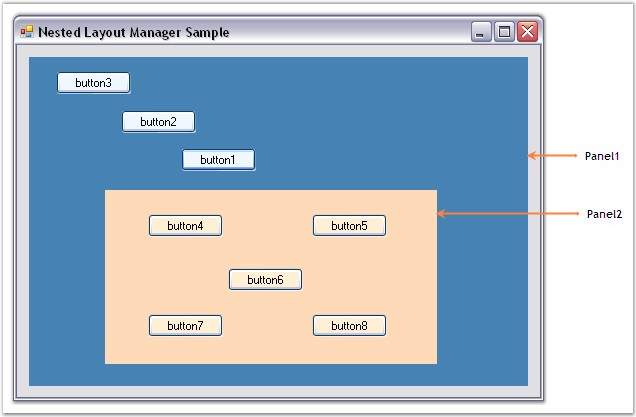
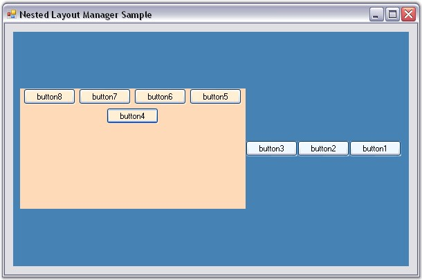

It is possible to layout the Child controls programmatically using Multiple Layout Managers. The following step by step procedure illustrates this.
· Set up a form with Buttons and Panels as shown in the below screen shot.

Figure 700: Child Controls Added to the Form
· Include the required namespace.
|
[C#]
using Syncfusion.Windows.Forms.Tools; |
|
[VB.NET]
Imports Syncfusion.Windows.Forms.Tools |
· Declare instances for FlowLayout and GridBagLayout Managers. FlowLayout is used for aligning the Child components of Panel2 (which contains button4 to button8) and GridBagLayout for aligning the Child components of Panel1 (which contains button1, button2, button3 and Panel2).
|
[C#]
private Syncfusion.Windows.Forms.Tools.GridBagLayout gridBagLayout1; private Syncfusion.Windows.Forms.Tools.FlowLayout flowLayout1;
this.flowLayout1 = new Syncfusion.Windows.Forms.Tools.FlowLayout(this.components); this.gridBagLayout1 = new Syncfusion.Windows.Forms.Tools.GridBagLayout(this.components); |
|
[VB.NET]
Private gridBagLayout1 As Syncfusion.Windows.Forms.Tools.GridBagLayout Private flowLayout1 As Syncfusion.Windows.Forms.Tools.FlowLayout
Me.flowLayout1 = New Syncfusion.Windows.Forms.Tools.FlowLayout(Me.components) Me.gridBagLayout1 = New Syncfusion.Windows.Forms.Tools.GridBagLayout(Me.components) |
· Set the Container control and constraints for the GridBagLayout. All the Child controls of this Container control are automatically registered as children with the GridBagLayout Manager.
|
[C#]
this.gridBagLayout1.ContainerControl = this.panel1; this.gridBagLayout1.SetConstraints(this.button1, new Syncfusion.Windows.Forms.Tools.GridBagConstraints(-1, -1, 1, 1, 0, 0, Syncfusion.Windows.Forms.Tools.AnchorTypes.Center, Syncfusion.Windows.Forms.Tools.FillType.None, new Syncfusion.Windows.Forms.Tools.Insets(0, 0, 0, 0), 0, 0, false)); this.gridBagLayout1.SetConstraints(this.button2, new Syncfusion.Windows.Forms.Tools.GridBagConstraints(-1, -1, 1, 1, 0, 0, Syncfusion.Windows.Forms.Tools.AnchorTypes.Center, Syncfusion.Windows.Forms.Tools.FillType.None, new Syncfusion.Windows.Forms.Tools.Insets(0, 0, 0, 0), 0, 0, false)); this.gridBagLayout1.SetConstraints(this.button3, new Syncfusion.Windows.Forms.Tools.GridBagConstraints(-1, -1, 1, 1, 0, 0, Syncfusion.Windows.Forms.Tools.AnchorTypes.Center, Syncfusion.Windows.Forms.Tools.FillType.None, new Syncfusion.Windows.Forms.Tools.Insets(0, 0, 0, 0), 0, 0, false)); this.gridBagLayout1.SetConstraints(this.panel2, new Syncfusion.Windows.Forms.Tools.GridBagConstraints(-1, -1, 1, 1, 0, 0, Syncfusion.Windows.Forms.Tools.AnchorTypes.Center, Syncfusion.Windows.Forms.Tools.FillType.None, new Syncfusion.Windows.Forms.Tools.Insets(0, 0, 0, 0), 0, 0, false)); |
|
[VB.NET]
Me.gridBagLayout1.ContainerControl = Me.panel1 Me.gridBagLayout1.SetConstraints(Me.button1, New GridBagConstraints(-1, -1, 1, 1, 0, 0, AnchorTypes.Center, FillType.None, New Insets(0, 0, 0, 0), 0, 0, False)) Me.gridBagLayout1.SetConstraints(Me.button2, New GridBagConstraints(-1, -1, 1, 1, 0, 0, AnchorTypes.Center, FillType.None, New Insets(0, 0, 0, 0), 0, 0, False)) Me.gridBagLayout1.SetConstraints(Me.panel2, New GridBagConstraints(-1, -1, 1, 1, 0, 0, AnchorTypes.Center, FillType.None, New Insets(0, 0, 0, 0), 0, 0, False)) Me.gridBagLayout1.SetConstraints(Me.button3, New GridBagConstraints(-1, -1, 1, 1, 0, 0, AnchorTypes.Center, FillType.None, New Insets(0, 0, 0, 0), 0, 0, False)) |
· Set the Container control, horizontal spacing between the components and alignment for the FlowLayout Manager.
|
[C#]
this.flowLayout1.ContainerControl = this.panel2; this.flowLayout1.HGap = 5; this.flowLayout1.Alignment = FlowAlignment.Near; |
|
[VB.NET]
Me.flowLayout1.ContainerControl = Me.panel2 Me.flowLayout1.HGap = 5 Me.flowLayout1.Alignment = FlowAlignment.Near |
· Handle the Layout event of the form to reposition it's Child controls (Panels).
|
[C#]
private void Form1_Layout(object sender, System.Windows.Forms.LayoutEventArgs e) { this.gridBagLayout1.LayoutContainer(); this.flowLayout1.LayoutContainer(); } |
|
[VB.NET]
Private Sub Form1_Layout(ByVal sender As Object, ByVal e As System.Windows.Forms.LayoutEventArgs) Me.gridBagLayout1.LayoutContainer() Me.flowLayout1.LayoutContainer() End Sub |

Figure 701: Layout Managers Nested Programmatically
See Also
Creating a Simple Layout, How to use multiple Layout Managers in a single form?